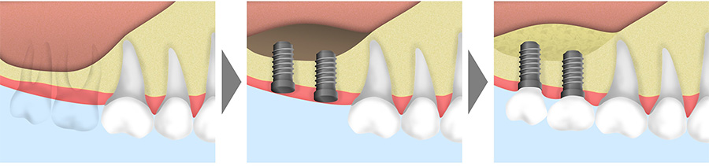

- ホーム
- インプラント
天王寺まつい総合歯科のインプラント治療
インプラントとは？
失った歯を天然歯と近い状態に回復
インプラントとは、人工歯根である細くて小さなインプラント体を顎の骨へと埋め込む治療法です。チタン製の人工歯根が顎の骨と一体化し、天然の歯と同じように噛むことが可能となります。
※正確には失活歯（神経の無い歯）と同等なレベルです。
審美性においても、インプラントの種類・方法次第では、天然の歯と見まがうほどの仕上がりが期待できます。
他の治療法との比較
歯を失った場合、歯の無いところを補う方法として、基本的にはブリッジ、入れ歯、インプラントの3つの治療方法が考えられます。ここではそれら3つの治療法の長所と短所をご紹介します。
ブリッジ
歯の無いところの両隣の歯を削り、人工歯を連結した被せ物の連結装置であり、固定する治療法でいわゆる橋です。
長所
- 口の中に固定されるためわずらわしさが少ない
- 治療期間が比較的短い
- 保険の範囲内であれば費用を安く抑えられる
- 自由診療であればかなり審美性と機能性の高い物を製作できる
短所
- 支えとなる歯を削らなければならない
- 支えとなる歯への負担が大きい
- 固定性の装置なので食べかすなどがたまりやすい
- 人工歯根がないため連結した人工歯の方が歯茎や骨が痩せていきやすい
- そもそも1本1本分かれて生えている天然の歯を連結するため長期的には口全体の変化に対して非常に不利に働く
入れ歯
残った歯に金属製の留め具をひっかける装置。1本からすべての歯を失った症例まで幅広く適応することが可能。総入れ歯の場合は留め具が不要で、歯茎との吸着及び口の周りの筋肉で安定を図る治療法です。
長所
- 着脱式なので非常に清掃しやすい
- 治療期間が比較的短い
- 保険の範囲内であれば費用を安く抑えられる
- 自由診療であれば審美性・耐久性の高いかつ違和感の少ない物を製作できる
短所
- 保険の場合、金属製の留め具（クラスプ）が目立ちやすい
- 着脱式なので比較的、異物感や違和感が生じやすく、わずらわしさもある
- 入れ歯と歯茎との間に食べ物が詰まりやすい
- 留め具のかかる歯に負担がかかる
インプラント
基本的に、人工歯根と被せ物、それらをつなぐ土台（アバットメント）によって構成される装置です。
長所
- 健康な歯を削る必要がない
- 支えの歯を必要としない
- 人工歯根があるので歯茎や歯槽骨が痩せにくい
- 機能性は天然歯に限りなく近い※失活歯 (神経の無い歯）と同等レベル
短所
- 保険が適用されない
- 治りを待つ治療のためトータルの治療期間が比較的長い
- 外科処置が必須
- 歯茎の状態によっては適応できないことがある
- インプラントをしたくても体の持病により適応が難しくなることがある
このように、インプラント治療であれば、健康な歯を犠牲にすることなく、審美性、機能性、耐久性に優れた装置を装着することが可能です。
当院のインプラント治療の特徴
10年以上の臨床経験による技術力
インプラントは、歯科治療の中でも、非常に専門性の高い領域です。診断から治療計画の立案、施術に至るまで、担当する歯科医師の経験や技量がそのまま反映される治療法といっても過言ではありません。
その点、当院の院長は、歯科医師として当初からインプラント治療に携わっており、インプラント治療の臨床経験も10年以上あり、症例数やバリエーションも豊富です。
また、自分達で開催する歯科スタディグループのインプラント専門ドクターとも連携しておりますので、超難症例にも対応可能です。
様々なバリエーションのインプラントが可能
一般的な歯科医院では、1つもしくは2つ程度のインプラントシステムにしか対応していませんが、当院では、「ショート（特別短い）」、「エステティック（審美的）」、「ティッシュレベル（機能性 高～低）」、「即時埋入 即時荷重・早期荷重」の5つのシステムを導入しておりますので、いろいろなケースに対応可能です。
世界NO.1シェアのインプラント ストローマンを使用
インプラントシステムは世界で100以上あり、その種類も多岐にわたります。その中でも当院では、世界NO.1シェアを誇るストローマンインプラントを導入しております。
数あるインプラントの中でも、最も早く骨と結合し、歯周病にもなりにくく、寿命が長いと評判のシステムです。その安全性や品質の高さは、すでに立証されています。
他にも歯を抜くと同時にインプラントを入れ外科処置の回数・治療期間を削減できる方法(即時埋入)やインプラント入れた日に仮の歯まで入れる方法(即時荷重)や治癒期間が短い方法(早期荷重)に優れた「メガジェンインプラント」もございます。
ちなみに、比較的安価で安全なインプラントをご希望の方には、「Dentiumインプラント」がおすすめです。ストローマンインプラントと同様、迅速な骨形成が可能でありながら、治療費を安く抑えることが可能なインプラントシステムです。興味のある方はお気軽にご相談ください。
歯科用CTを使用し安全なインプラントを実施
当院では、インプラント治療を安全かつ精密に行うために、歯科用CTを活用しております。術前のCT撮影によって得られる3次元画像をもとに、インプラントを埋入する角度や深さ方向などを正確にシミュレーションいたします。
医院にCTがあるため、必要に応じて術中・術後のCT撮影も可能です。その結果、安全性の高いインプラントオペが実現可能となります。
骨がない方にも対応～骨造成
インプラント治療を成功させるためには、患者さまの骨の状態が健康でなければなりません。重度の歯周病で骨が吸収されていたり、骨粗鬆症の症状が現れていたりすると、インプラント体をしっかり埋め込むことが困難となります。
ただ、そういった骨の状態が悪い方でも、「骨造成」を行うことで、インプラント治療が可能となります。具体的には、ソケットリフトやサイナスリフト、GBR、ボーンスプレッド法といった治療法です。
ソケットリフト（部分的な底上げ手術）
ソケットリフトは、上の奥歯にインプラントを埋入する際に必要となる骨造成術です。口の中から上顎洞底部を持ち上げて、すき間を作ります。そこへ骨移植などを行うことにより、インプラント埋入部位の骨造成をはかります。基本的に骨の高さが4mm以上あることが適応条件となります。
サイナスリフト（広範囲の底上げ手術）

サイナスリフトは、骨の高さが4mm以下で、ソケットリフトを適応できない症例で行われる骨造成術です。サイナスリフトは、上顎洞の側方から大きくアプローチするため、患者さまの身体的負担は比較的大きくなる傾向にあります。ただし、大きく骨が無いなど幅広い症例に適応可能です。
GBR（骨誘導再生法）
GBR法は、骨誘導再生法とも呼ばれる骨造成術で、骨量が不足しているケースで広く適応されます。メンブレンという特殊な膜と骨を増す薬を用いて、骨の再生を促します。その結果、不足している骨量を補うことができます。
ケースによって抜歯と同時に行う場合もあれば、インプラント埋入と同時に行う場合もあります。
ボーンスプレッド法（歯槽堤拡大術）
骨を機械的に圧縮、拡大して骨幅と骨の緻密化を図り、安定したインプラント埋入を行います。
ソケットシールドテクニック(ルートメンブレンテクニック)
抜歯即時インプラントを行う際に、歯を全て抜かず、歯根膜に隣接する１ミリ程度の歯根片を意図的に残す事で、骨の減少を抑えることができる手法です。
インプラント治療をご検討中の患者様へ
当院は、平日午前中にオペタイム、金曜日にオペ日があり時間に制限されることなく優先的にゆっくりと治療を受けて頂ける環境を整えております。
〜他院様からのインプラント治療のご相談も受け付けております〜
当院では他院様からのCT撮影の依頼、インプラントオペの依頼（出張なども可）を受付しておりますので、お気軽にご相談ください。